Префектура Гумма · Минаками и Катасина · горные лыжи
Гора Танигава и зимний Одзе: лыжная поездка в двух часах от Токио
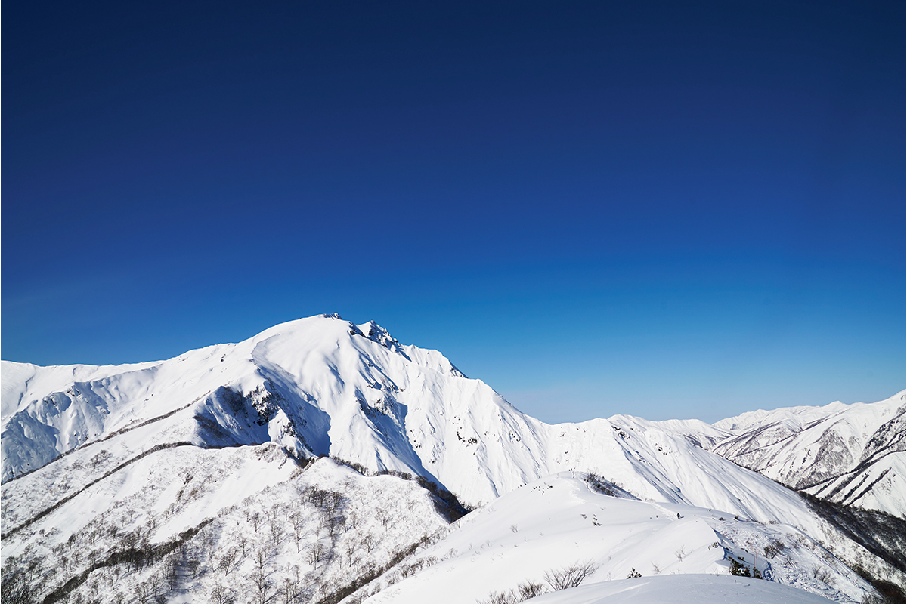
За японским пухлым снегом не обязательно ехать далеко от столицы. На севере префектуры Гумма есть гора Танигава, в двух часах от Токио, с курортом на высоте 1300 метров, и зимний Одзе, куда поднимаются на ратраке по старой горной дороге.
Маршрут
Две горы для одной поездки
Гору Танигава и национальный парк Одзе обычно вспоминают летом. Танигава считается горой для альпинистов, Одзе известен высокогорными болотами, одними из самых больших на Хонсю. Но зимой оба места превращаются в угодья для лыжников, и всё это в пределах региона Канто, недалеко от столицы.
Такую поездку выбрал Ёсихару Хосино, глава компании Hoshino Resorts. Он родился в префектуре Нагано и руководит компанией с 1991 года: под её марками работают гостиницы, онсэн-рёканы и горнолыжные курорты. Хосино известен как страстный лыжник, его цель не меньше 80 дней на склоне за сезон. В 2024 году к нему присоединился давний спутник по лыжным поездкам, редактор, который катается с начальной школы, а позже увлёкся внетрассовым катанием.
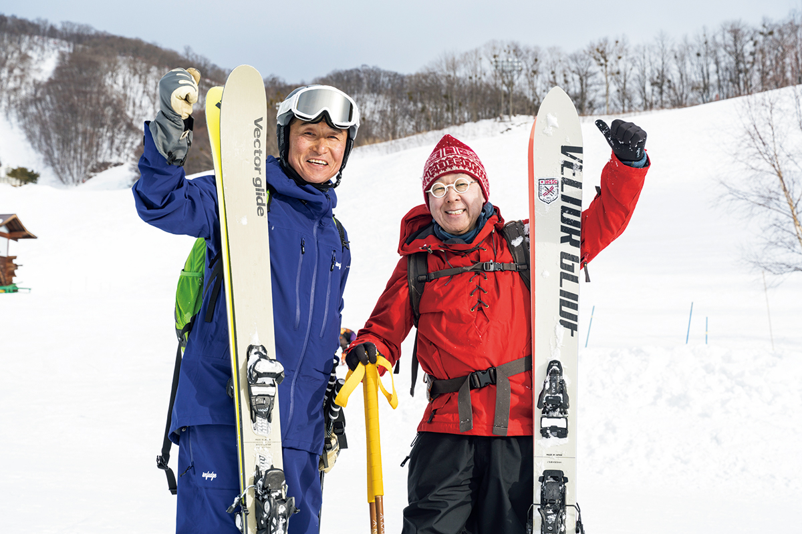
Японский пухлый снег стал маркой, которой страна гордится. Поездка, где катание сочетается с местной едой, сакэ и онсэнами, давно привычна не только самим японцам, но и иностранным путешественникам. Танигава и Одзе дают всё это совсем недалеко от Токио.
Танигава
Пухлый снег на высоте 1300 метров
Гора Танигава стоит на границе префектур Гумма и Ниигата и венчает горную цепь Танигава. У неё две вершины, Тома-но-мими и Оки-но-мими, и она входит в список «Ста знаменитых гор Японии». В народе её называют «близкой и хорошей горой»: от Токио до неё около двух часов.
От Одзе до Танигавы около полутора часов на машине. На склоне горы работает курорт Mt.T by Hoshino Resorts. Канатная дорога за 15 минут поднимает на плато Тэндзиндайра, на высоту около 1300 метров, и стоит выйти из кабины, как вокруг расстилается белый мир.
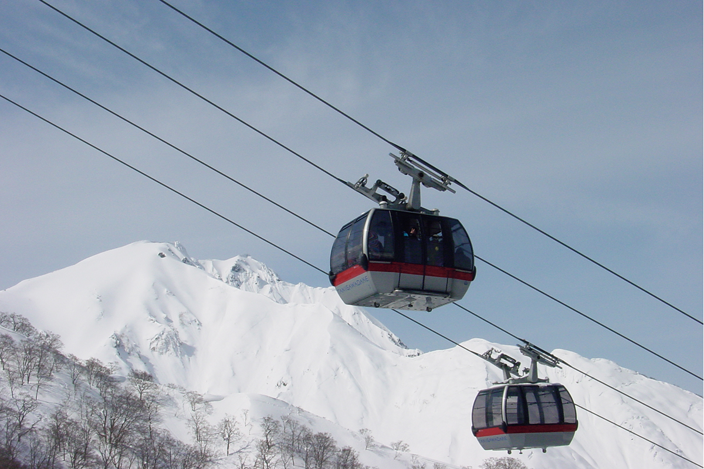
Склоны веером расходятся от верхней станции канатной дороги. Курорт небольшой, но рельеф здесь разнообразный, есть технические участки, и опытные лыжники его любят.
Хосино и его спутник приехали в начале марта. В городах в это время уже чувствуется весна, а на Тэндзиндайре снега ещё много, к тому же ночью он падал снова. Оба поспешили на подъёмник и выбрали линию, по которой ещё никто не проехал. Снег взлетал из-под лыж и осыпал с головы до ног: весной такого пухлого снега обычно не ждёшь.
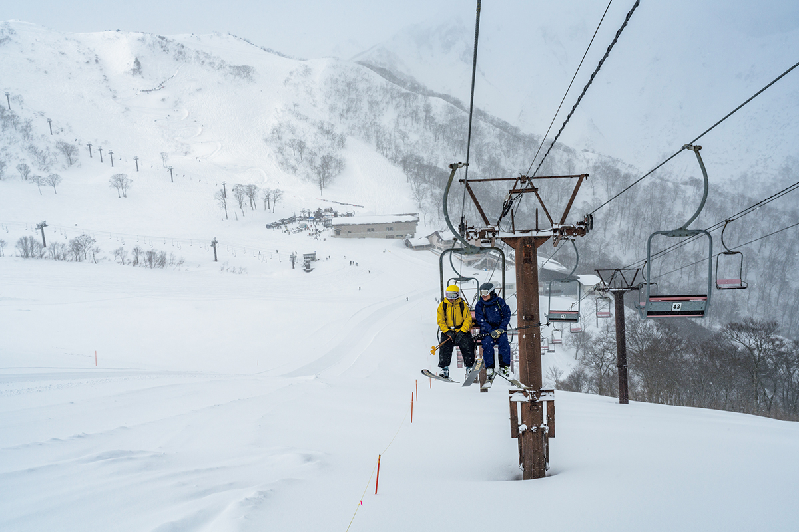
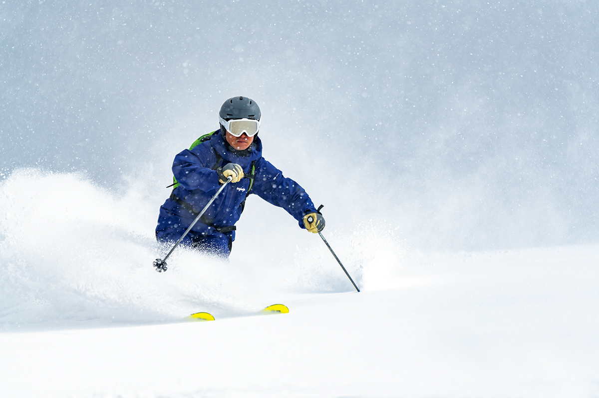
Летом на Танигаву едут ради восхождений, но и зимой «близкая и хорошая гора» не уступает себе летней. Если добавить длинную трассу по лесной дороге, способов провести здесь день становится очень много.
Обед
Гратен в хлебе с видом на горы
Устав от спусков, можно зайти в панорамный ресторан «Вью терас Тэндзин». Здесь подают фирменное блюдо «Танигава-дакэ пан-гратен», а также рамэн, карри с рисом и другую простую еду. Обед идёт под вид на горы за большими окнами.
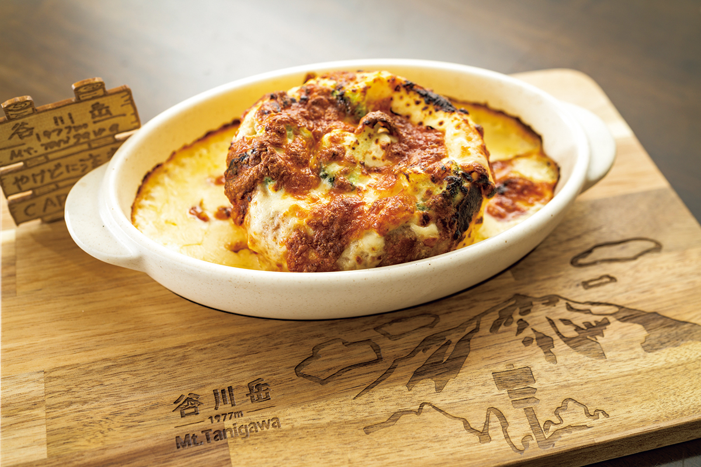
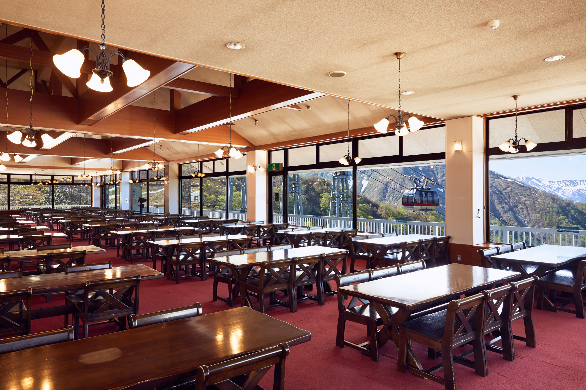
Курорт
Mt.T by Hoshino Resorts
Курорт на плато Тэндзиндайра раньше назывался «Танигава-дакэ Тэндзиндайра ски-дзё by Hoshino Resorts». 1 декабря 2024 года он получил имя Mt.T by Hoshino Resorts, а смену названия компания объявила «ребрендингом горы»: на курорте хотят показать гору Танигава с новой стороны.
Танигава стоит на климатической границе между стороной Японского моря и тихоокеанской стороной, поэтому снега здесь выпадает много. В разгар сезона за пухлым снегом сюда съезжаются лыжники со всей страны.
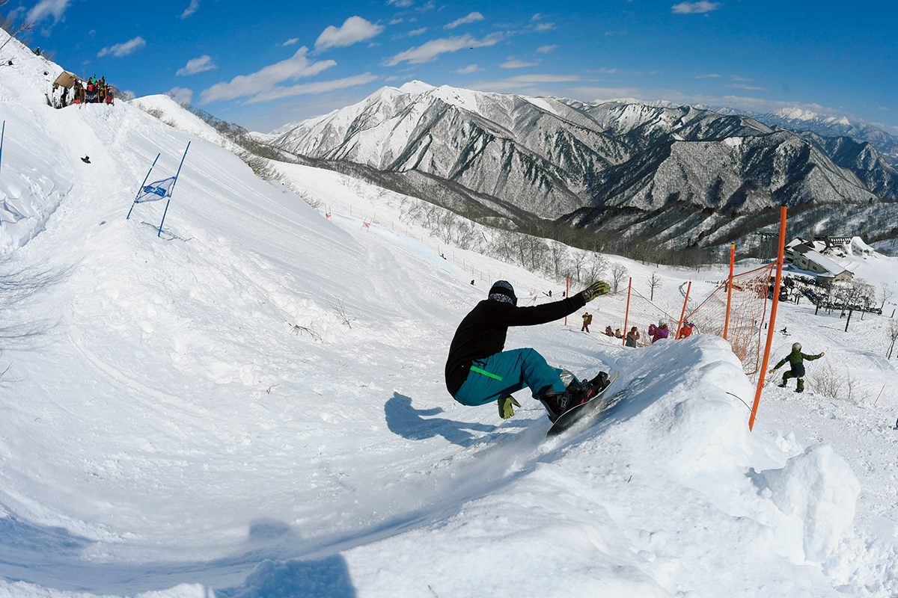
На высоте около 1300 метров работают три подъёмника и трассы любого уровня, от начального до сложного. Под канатной дорогой проложена дикая длинная трасса около 3 километров: на спуске совсем рядом видны ручьи и водопады. Парный подъёмник поднимает на перевал Тэндзин-тогэ, откуда на 360 градусов открываются Танигава и соседние горы.
Сезон 2026/27 года курорт планирует с 19 декабря 2026 года по 4 апреля 2027 года. В сезон 2024/25 года дневной ски-пасс стоил 9000 иен для взрослых и 1500 иен для младших школьников.
Mt.T by Hoshino Resorts
- Адрес
- префектура Гумма, Минаками, Юбисо, государственный лес Юбукияма
- Телефон
- +81 278-72-3575
- Даты
- сезон 2024/25 года с 21 декабря 2024 по 6 апреля 2025 года; сезон 2026/27 года с 19 декабря 2026 по 4 апреля 2027 года (официальный сайт, 2026)
- Часы работы
- 8:30–16:00, подъёмники 8:30–15:00
- Цены / Вход
- дневной ски-пасс 9000 иен для взрослых, 1500 иен для младших школьников (сезон 2024/25)
Одзе
На снегоходе по старой дороге
Одзе обычно представляют высокогорными болотами вроде равнины Одзегахара. Но для лыжников это ещё и место внетрассового катания: среди здешних гор есть, например, гора Сибуцу. До самых глубоких уголков парка зимой помогает добраться кэт-тур, поездка на ратраке по снегу.
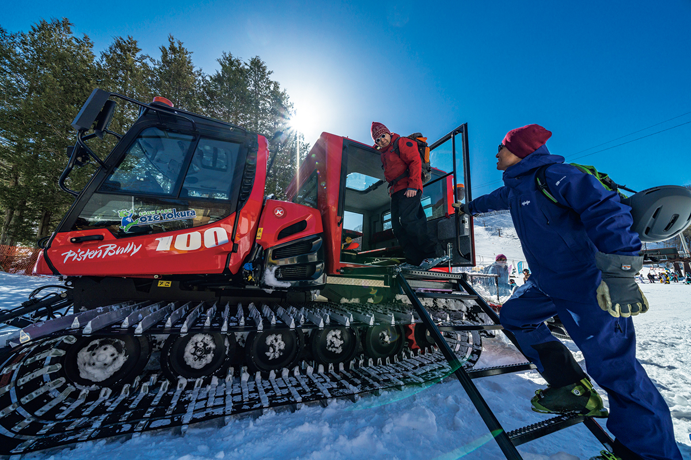
«Я услышал, что в Одзе начались кэт-туры, и мне очень захотелось поехать. Не удержался и позвал с собой спутника»
Ёсихару Хосино
Ратрак выезжает с горнолыжной базы «Одзе Токура» в деревне Катасина и, раскачиваясь, ползёт вверх по лесной дороге. До того как к перевалу Хатомати проложили автодорогу, именно этим путём в Одзе ходили чаще всего. Гид тура вместе с товарищами привёл в порядок заброшенную горную тропу и в 2022 году начал возить по ней лыжников.
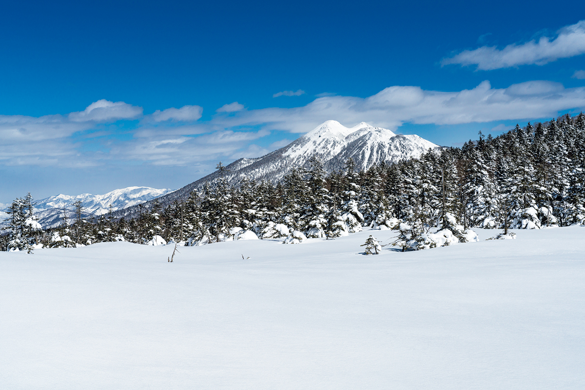
«В Одзе много красивых мест, кроме болот. Дальше хотим привести в порядок и горные хижины, чтобы в Одзе было ещё интереснее»
гид тура
На перевале Фудзими ратрак останавливается, дальше пешком. На лыжи надевают камусы, полосы ткани, которые не дают скользить назад, и группа уходит в лес.
Спуск
Целина, обед на снегу и плато Аямэдайра
Хвойный лес под снегом похож на иллюстрацию к сказке. Через полчаса подъёма в тишине группа выходит на гребень. С него свисают огромные снежные карнизы, надутые ветром, а внизу лежат открытые склоны, будто созданные для лыж. Вслед за гидом все один за другим уходят вниз.
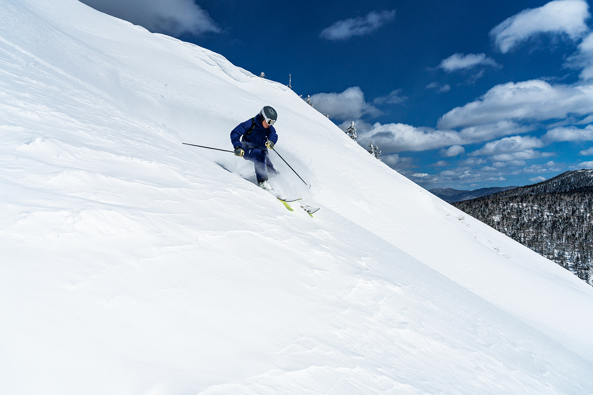
На спуске будто паришь над снегом. Весенний снег чуть тяжёлый, но по нему легко ехать. Спустившись к ратраку, группа обедает: гиды жарят на походной плитке горячие сэндвичи и варят кофе. Идти до гребня недалеко, поэтому можно подняться и спуститься ещё не раз. Так внетрассовое катание становится доступным без долгих переходов.
После обеда группа снова поднимается на гребень и идёт дальше, к плато Аямэдайра. Когда кончается лес, у всех перехватывает дыхание: впереди до горизонта тянутся гряды гор.
«Горы встают одна за другой. Этот вид Одзе прекрасен»
Ёсихару Хосино
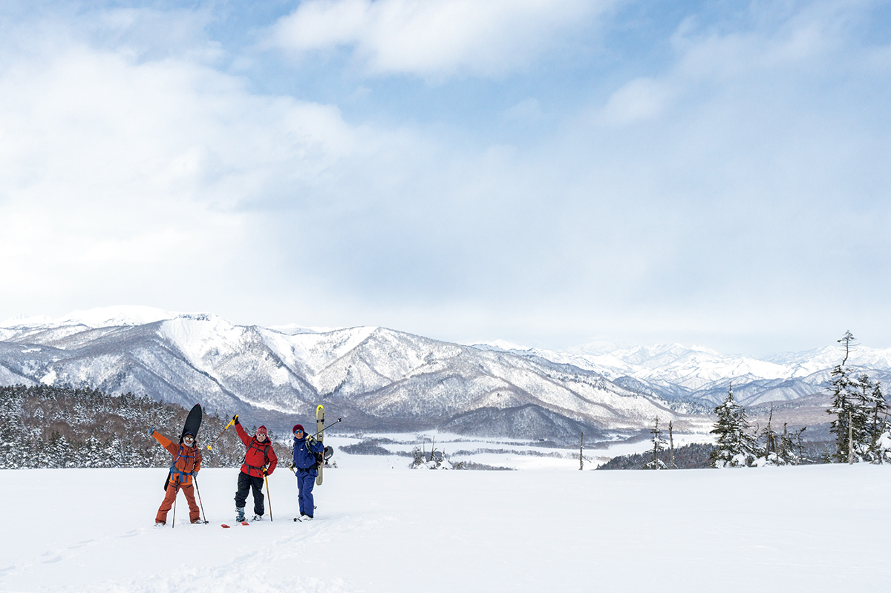
Это катание, на котором чувствуешь природу такой, какая она есть, и смакуешь каждый спуск. На подготовленной трассе такого не бывает.
Кэт-тур в Одзе
- Адрес
- префектура Гумма, деревня Катасина, Токура, 329 (сбор на горнолыжной базе «Одзе Токура»)
- Телефон
- +81 80-4913-3219
- Даты
- с конца января до середины апреля, в зависимости от погоды (сайт организатора, 2026)
- Цены / Вход
- короткий внетрассовый тур 25 000 иен, тур «Премиум» 44 000 иен с человека (сайт организатора, 2026)
Фото: Ватару Сугимура.